pure-directions · command-00:stand
本次未触发高度／倾斜阈值；survival启发式 True；400 policy ticks
原始MP4 · 12.02秒 · 640×360
最低pelvis 0.625 m；最低up 0.853；XY路径 5.104 m
轨迹和原始证据
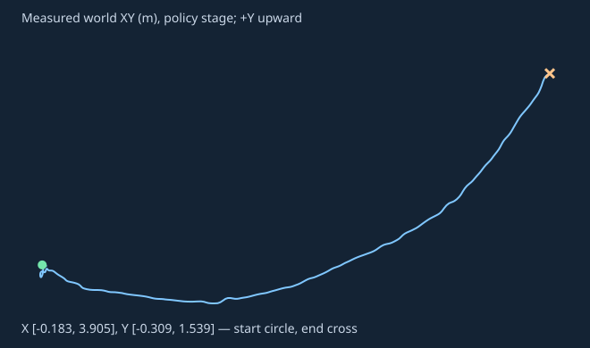
MP4 SHA256 2f96c224a98415682b57819e3edf8a1a71864d1f176c66d37b167194d97f37db
纯蒸馏与混合微调各含12个平地方向、17种场景。全部真实父进程、116个worker退出、116个host映射和58段完整解码，经独立review绑定后才生成此页。视频可能包含初始化；下方轨迹仅画policy阶段。
高度／倾斜阈值与survival启发式用于描述姿态。未触发阈值不代表技能或完整越障课程成功；本页不计算成功率。
汇总 · 全部58项指标 · 真实来源和review绑定 · 原始字节归档表 · 重放与归档范围
本次未触发高度／倾斜阈值；survival启发式 True；400 policy ticks
原始MP4 · 12.02秒 · 640×360
最低pelvis 0.625 m；最低up 0.853；XY路径 5.104 m

MP4 SHA256 2f96c224a98415682b57819e3edf8a1a71864d1f176c66d37b167194d97f37db
触发高度／倾斜阈值；survival启发式 False；400 policy ticks
原始MP4 · 11.92秒 · 640×360
最低pelvis 0.074 m；最低up -0.227；XY路径 1.714 m
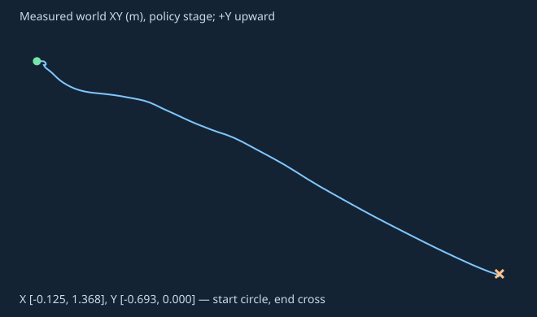
MP4 SHA256 334f1f42367f682b92cd104c427478e357a54334063e5828aea17a097d1ce181
触发高度／倾斜阈值；survival启发式 False；400 policy ticks
原始MP4 · 12.00秒 · 640×360
最低pelvis 0.073 m；最低up -0.238；XY路径 1.032 m
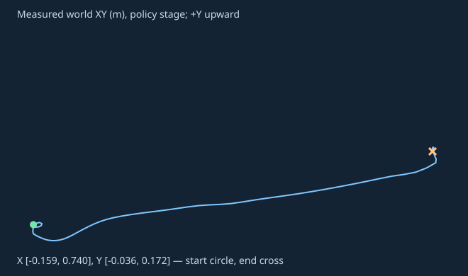
MP4 SHA256 6e8b55a0642201829129b7fa28ee705122da0ce360ccbee8a6e9f5886f4b37e2
触发高度／倾斜阈值；survival启发式 False；400 policy ticks
原始MP4 · 12.06秒 · 640×360
最低pelvis 0.073 m；最低up -0.241；XY路径 1.125 m
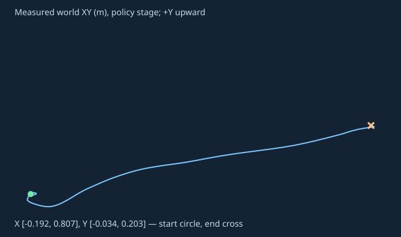
MP4 SHA256 49e3b5be945f9a03876c451cf64b6e04e4b1debe5bcac76f5a817444bded3af5
触发高度／倾斜阈值；survival启发式 False；400 policy ticks
原始MP4 · 12.04秒 · 640×360
最低pelvis 0.091 m；最低up -0.275；XY路径 5.274 m
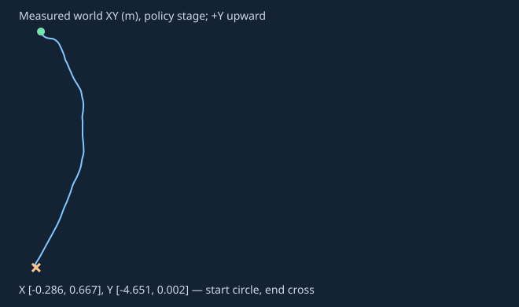
MP4 SHA256 e95364784f0496e602cad29334cc1f2adacc266ec01a7a4c8538c6567ad7aacb
触发高度／倾斜阈值；survival启发式 False；400 policy ticks
原始MP4 · 11.98秒 · 640×360
最低pelvis 0.085 m；最低up -0.245；XY路径 2.032 m
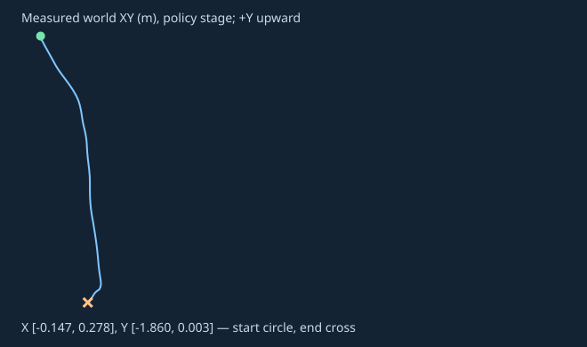
MP4 SHA256 0a2472c18e4b518bf813dc7ed8ca8e0ef154ec39840a9336e807965e17d65817
触发高度／倾斜阈值；survival启发式 False；400 policy ticks
原始MP4 · 11.96秒 · 640×360
最低pelvis 0.101 m；最低up -0.202；XY路径 1.650 m
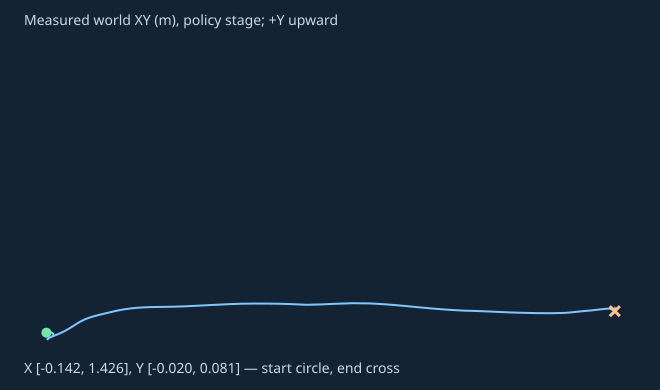
MP4 SHA256 c21f0676869611af60ed0fbf99dff9d369e69e2d19da95d0033a2a5845d19aab
本次未触发高度／倾斜阈值；survival启发式 True；400 policy ticks
原始MP4 · 12.06秒 · 640×360
最低pelvis 0.601 m；最低up 0.794；XY路径 13.580 m
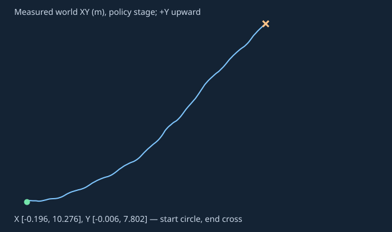
MP4 SHA256 d8c920a720fb470f525e0eb56b79613419b6f4013d079acb37a6e702b0599f0c
本次未触发高度／倾斜阈值；survival启发式 True；400 policy ticks
原始MP4 · 12.04秒 · 640×360
最低pelvis 0.635 m；最低up 0.928；XY路径 13.949 m
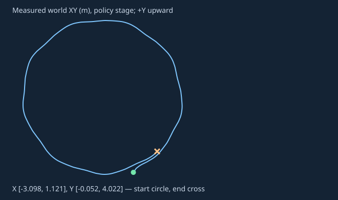
MP4 SHA256 3dbc7db2140350787cea110be35d512de720e53cdc58c3f20ea8dfaf24678b64
触发高度／倾斜阈值；survival启发式 False；400 policy ticks
原始MP4 · 12.00秒 · 640×360
最低pelvis 0.073 m；最低up -0.240；XY路径 1.079 m
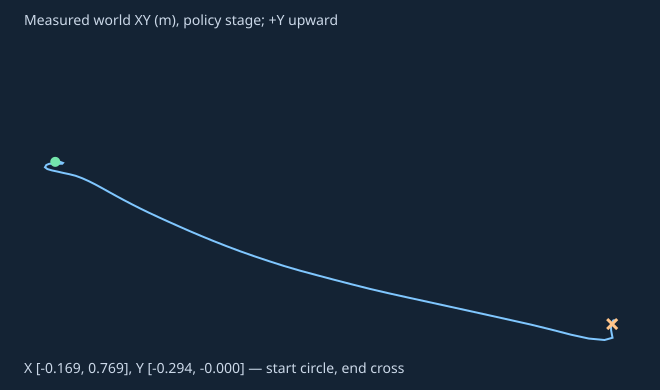
MP4 SHA256 46bec244bbc584012461e597e61f4a36a2abf7cfb3dd474132f21f7df9fc1dcd
触发高度／倾斜阈值；survival启发式 False；400 policy ticks
原始MP4 · 12.10秒 · 640×360
最低pelvis 0.078 m；最低up -0.209；XY路径 1.385 m
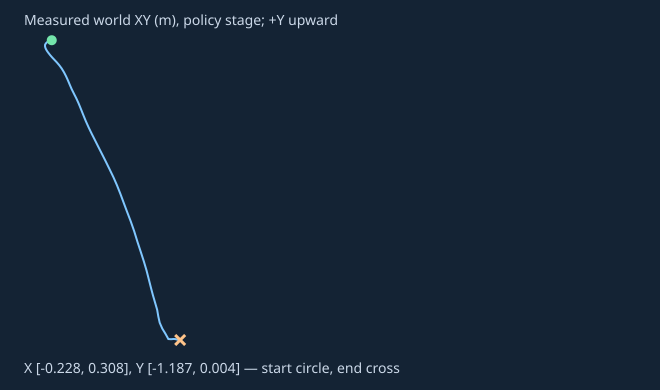
MP4 SHA256 ac38b3d8afd73fbad7ce86a3869c9900d113e662ebd6db7a52318e0de3cf71a6
本次未触发高度／倾斜阈值；survival启发式 True；400 policy ticks
原始MP4 · 11.96秒 · 640×360
最低pelvis 0.657 m；最低up 0.905；XY路径 10.210 m
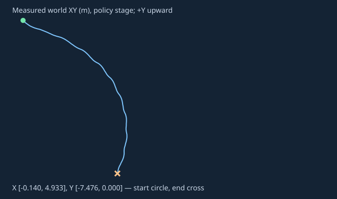
MP4 SHA256 c725c1556f7e1c3f4bc1c7ae547d9d7fb8ddec89bbf6d61c6474c301af125bf8
触发高度／倾斜阈值；survival启发式 False；500 policy ticks
原始MP4 · 14.02秒 · 640×360
最低pelvis 0.121 m；最低up -0.238；XY路径 2.760 m
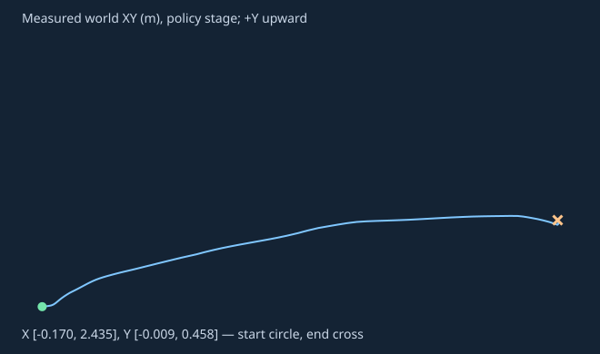
MP4 SHA256 d9c6421154a4cadc2a149ae4d8a602e045ab4f9e2c71c9850b23f28f14b65a6a
触发高度／倾斜阈值；survival启发式 False；500 policy ticks
原始MP4 · 14.00秒 · 640×360
最低pelvis 0.133 m；最低up 0.053；XY路径 1.176 m
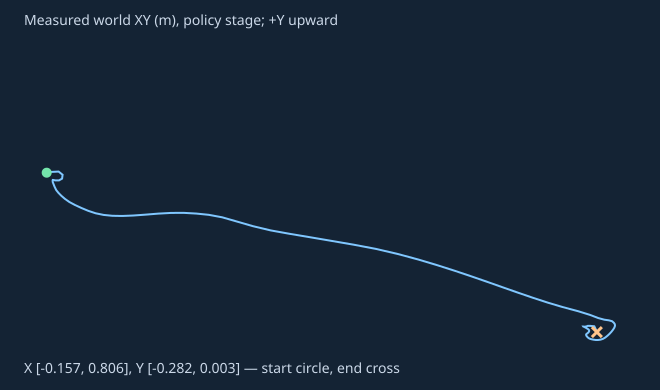
MP4 SHA256 d2afcf39617679a56470626c2d41e2291f2ceb098277f4bc351f84b60bcb2e61
触发高度／倾斜阈值；survival启发式 False；500 policy ticks
原始MP4 · 14.00秒 · 640×360
最低pelvis 0.092 m；最低up -0.227；XY路径 1.550 m
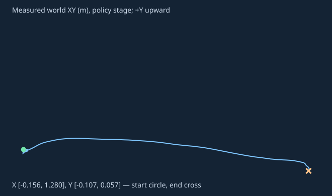
MP4 SHA256 9a42a5f79d86e0a2f12fe249b8c13fde9597c38e6c068aa3cd047be4118fb8e5
触发高度／倾斜阈值；survival启发式 False；500 policy ticks
原始MP4 · 14.02秒 · 640×360
最低pelvis 0.070 m；最低up -0.240；XY路径 1.748 m
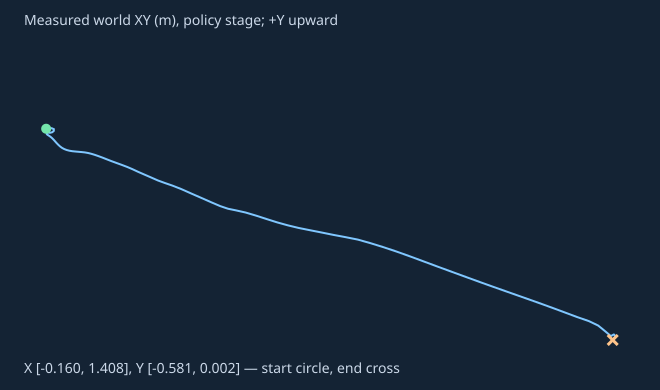
MP4 SHA256 6ad9aa2b80182e5bd9f9d13003bde3d35d9a6d1f3daba905febda16fd74d1db8
触发高度／倾斜阈值；survival启发式 False；500 policy ticks
原始MP4 · 14.02秒 · 640×360
最低pelvis 0.089 m；最低up -0.208；XY路径 1.660 m
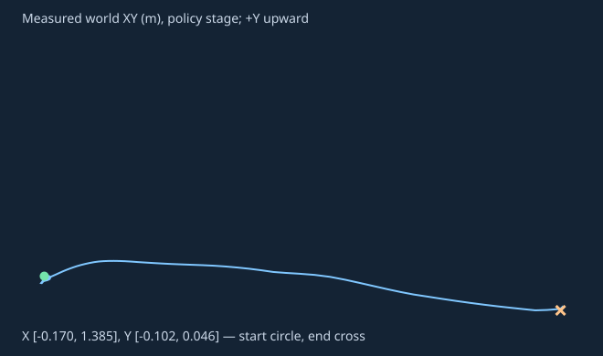
MP4 SHA256 fa26bc3b117488e78bf14e90d1f66cda020805d02553f46f7f0356077e0439ae
本次未触发高度／倾斜阈值；survival启发式 True；500 policy ticks
原始MP4 · 14.04秒 · 640×360
最低pelvis 0.615 m；最低up 0.876；XY路径 2.030 m
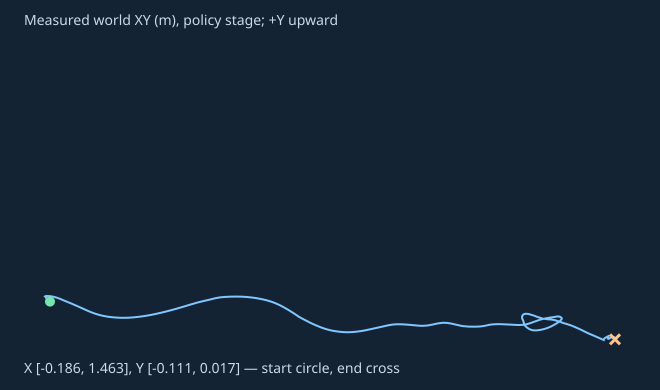
MP4 SHA256 434142a80001b97f03fe08ae2620a5f940b954bc44f9e25de6026e9e4db378b3
触发高度／倾斜阈值；survival启发式 False；500 policy ticks
原始MP4 · 13.92秒 · 640×360
最低pelvis 0.096 m；最低up -0.204；XY路径 1.603 m
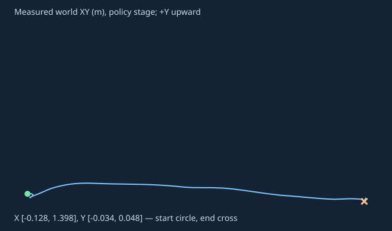
MP4 SHA256 7f3791763a55f9cae9cd89a4ae21fd94336a96ad2fe254f68c759dde492622b6
触发高度／倾斜阈值；survival启发式 False；500 policy ticks
原始MP4 · 14.02秒 · 640×360
最低pelvis 0.088 m；最低up -0.189；XY路径 1.942 m
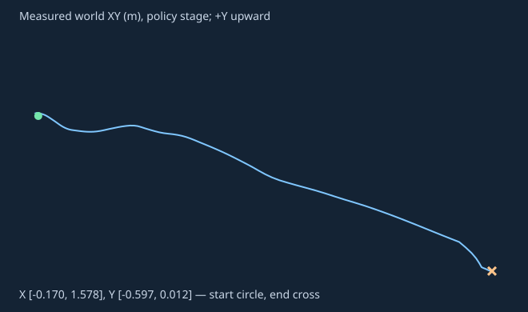
MP4 SHA256 5aec9108a2b7b2896cfd5afb3113a5b65978a8148fc1dd17d63533cef3a05ef6
触发高度／倾斜阈值；survival启发式 False；500 policy ticks
原始MP4 · 14.04秒 · 640×360
最低pelvis 0.101 m；最低up -0.303；XY路径 2.399 m
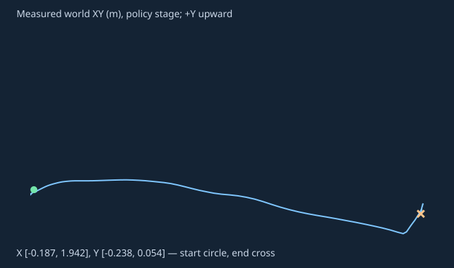
MP4 SHA256 8c6606495ca6da68cc64e62549fa887a29169d850ca9bb74340b0e274ff5292c
触发高度／倾斜阈值；survival启发式 False；500 policy ticks
原始MP4 · 13.94秒 · 640×360
最低pelvis 0.069 m；最低up -0.012；XY路径 1.281 m
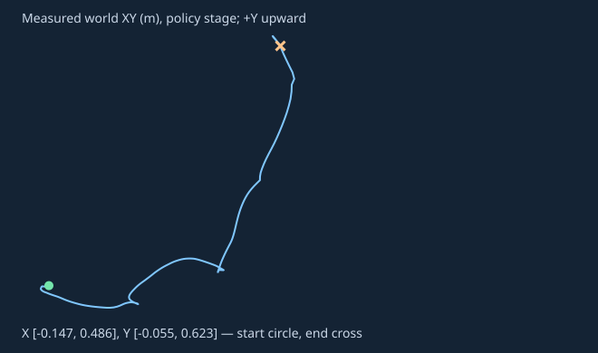
MP4 SHA256 588276f4d9cf018ba878a3992d100bbbf8e06ba8172fb2510a497ba2ec767079
触发高度／倾斜阈值；survival启发式 False；500 policy ticks
原始MP4 · 14.02秒 · 640×360
最低pelvis 0.334 m；最低up 0.697；XY路径 1.006 m
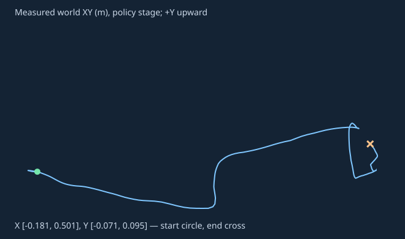
MP4 SHA256 c68995e2aeb17a5f10277fba9cff2252a65192becb60716bbbb3987a411fc6e8
触发高度／倾斜阈值；survival启发式 False；500 policy ticks
原始MP4 · 14.02秒 · 640×360
最低pelvis 0.101 m；最低up -0.203；XY路径 1.621 m
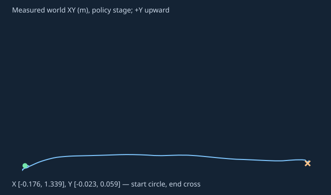
MP4 SHA256 08e5ef3e642874fcfc061157cff65ce4e74f017bf5d8a92ecc3e46bf6ae91c67
触发高度／倾斜阈值；survival启发式 False；500 policy ticks
原始MP4 · 14.06秒 · 640×360
最低pelvis 0.080 m；最低up -0.240；XY路径 2.223 m
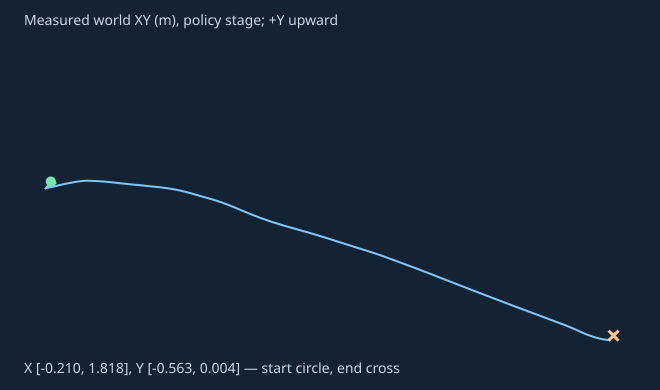
MP4 SHA256 e2d099366462dbc948d78722bee1ed66537c61704022ea07aeae1a832967cec9
触发高度／倾斜阈值；survival启发式 False；500 policy ticks
原始MP4 · 14.02秒 · 640×360
最低pelvis 0.090 m；最低up -0.205；XY路径 1.632 m
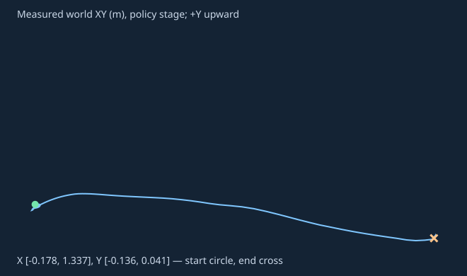
MP4 SHA256 9c3675c46176e11dd2a551f83fdec290e84208b9ab5acf234aaa394b5845b950
触发高度／倾斜阈值；survival启发式 False；500 policy ticks
原始MP4 · 14.06秒 · 640×360
最低pelvis 0.093 m；最低up -0.207；XY路径 1.707 m
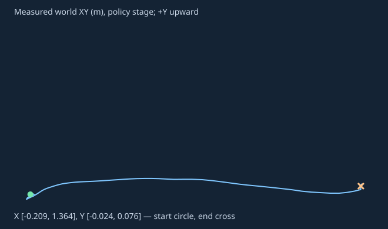
MP4 SHA256 bc53213640164dfb59045f6311623550bcacdc9a407bfc8cc03bdfda4063ab96
触发高度／倾斜阈值；survival启发式 False；500 policy ticks
原始MP4 · 14.08秒 · 640×360
最低pelvis 0.069 m；最低up -0.237；XY路径 1.101 m
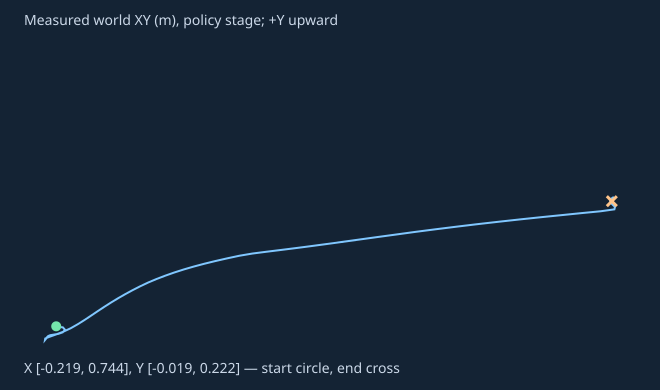
MP4 SHA256 746b991ab65570eacf4974b28210a03b90cc41485db327ed3c88d6e77a2fcdad
触发高度／倾斜阈值；survival启发式 False；500 policy ticks
原始MP4 · 14.06秒 · 640×360
最低pelvis 0.094 m；最低up -0.219；XY路径 0.977 m
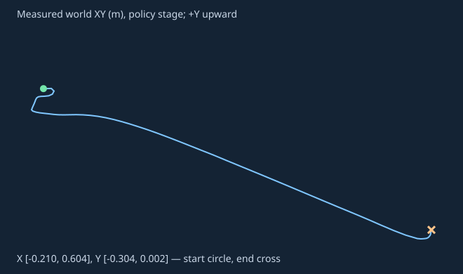
MP4 SHA256 75919e6f2a74f5386e6658ecb51d2d54900cdb6f1327b4a633c12c364f8e4b99
本次未触发高度／倾斜阈值；survival启发式 True；400 policy ticks
原始MP4 · 12.10秒 · 640×360
最低pelvis 0.785 m；最低up 0.998；XY路径 0.159 m
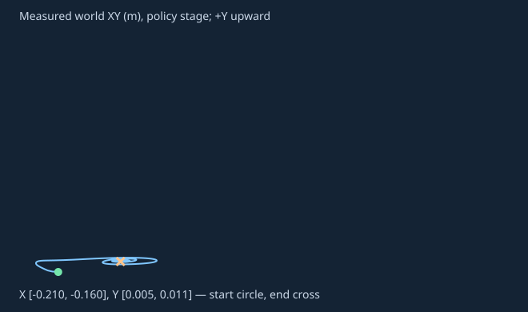
MP4 SHA256 fe4bfccca707a70563711afbc5daea80caa0880a4b28790c8d59339af618957d
本次未触发高度／倾斜阈值；survival启发式 True；400 policy ticks
原始MP4 · 12.00秒 · 640×360
最低pelvis 0.738 m；最低up 0.974；XY路径 6.773 m
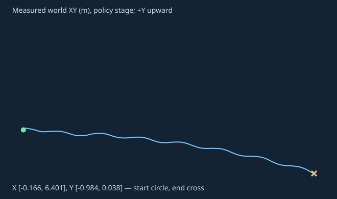
MP4 SHA256 5afc69d6261c3cf91fed22dd4ea9efe7975af6a5eee286fe2166b352abf323bf
本次未触发高度／倾斜阈值；survival启发式 True；400 policy ticks
原始MP4 · 11.94秒 · 640×360
最低pelvis 0.727 m；最低up 0.942；XY路径 5.190 m
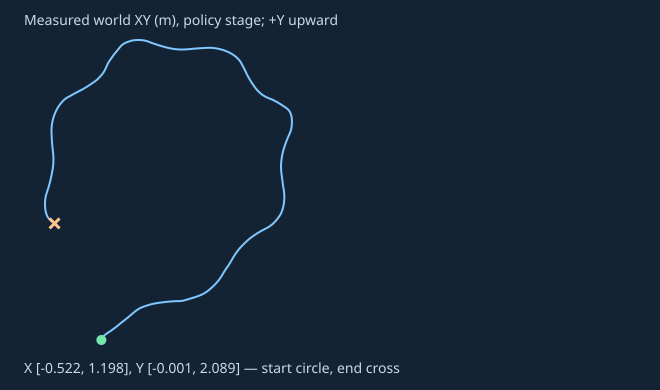
MP4 SHA256 280c3fa3e9c1af3b82870da5d7ddb8a3c1f930ad8cb865dfe64378f4afe3281f
本次未触发高度／倾斜阈值；survival启发式 True；400 policy ticks
原始MP4 · 12.02秒 · 640×360
最低pelvis 0.708 m；最低up 0.961；XY路径 6.444 m
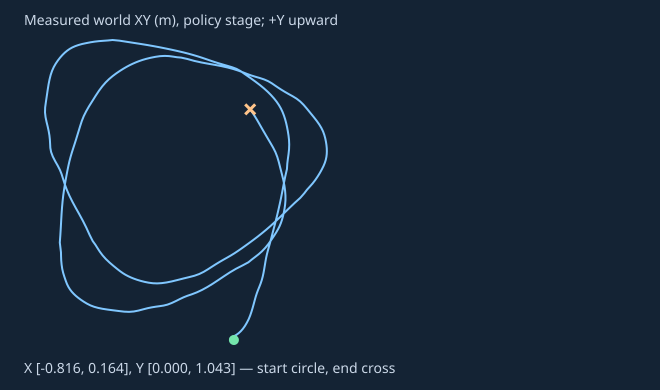
MP4 SHA256 4396af1b3836711007c4630beabe73e0111ecd60382362c89ae451368d612dbb
本次未触发高度／倾斜阈值；survival启发式 True；400 policy ticks
原始MP4 · 12.02秒 · 640×360
最低pelvis 0.715 m；最低up 0.972；XY路径 5.871 m
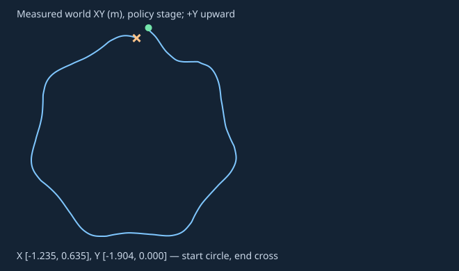
MP4 SHA256 c8cf27837b9895b950229de88addf5e6290df868bcba0976b0b43dd61fbf2041
本次未触发高度／倾斜阈值；survival启发式 True；400 policy ticks
原始MP4 · 11.94秒 · 640×360
最低pelvis 0.715 m；最低up 0.938；XY路径 5.899 m
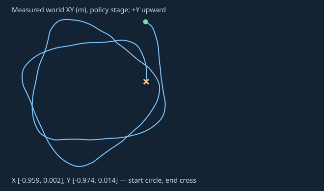
MP4 SHA256 ef4f34fffb719d376e732e3224fc0b01535bb839338c56bd19370589908a4df9
本次未触发高度／倾斜阈值；survival启发式 True；400 policy ticks
原始MP4 · 12.02秒 · 640×360
最低pelvis 0.642 m；最低up 0.847；XY路径 15.799 m
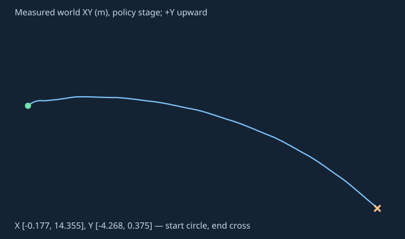
MP4 SHA256 14a94e8ed131f7b90c6d24ef4025c1dc1f3154afb07ffc5c3f830682b2341e34
本次未触发高度／倾斜阈值；survival启发式 True；400 policy ticks
原始MP4 · 12.08秒 · 640×360
最低pelvis 0.656 m；最低up 0.864；XY路径 16.052 m
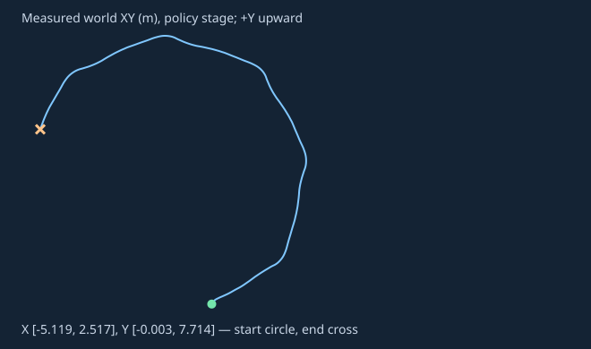
MP4 SHA256 f4a182d36f0d32333863a8a44109db9dc8af5d7304b72b49c8f5b1f8b7504526
本次未触发高度／倾斜阈值；survival启发式 True；400 policy ticks
原始MP4 · 12.04秒 · 640×360
最低pelvis 0.658 m；最低up 0.901；XY路径 13.505 m
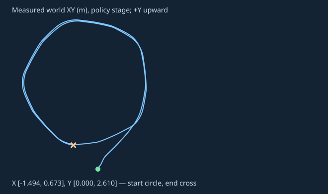
MP4 SHA256 1e3f520eca0ffc1fd57f210283b5f6a716502c1546a518d5b432b1b4df0b8b84
本次未触发高度／倾斜阈值；survival启发式 True；400 policy ticks
原始MP4 · 12.00秒 · 640×360
最低pelvis 0.619 m；最低up 0.826；XY路径 15.651 m
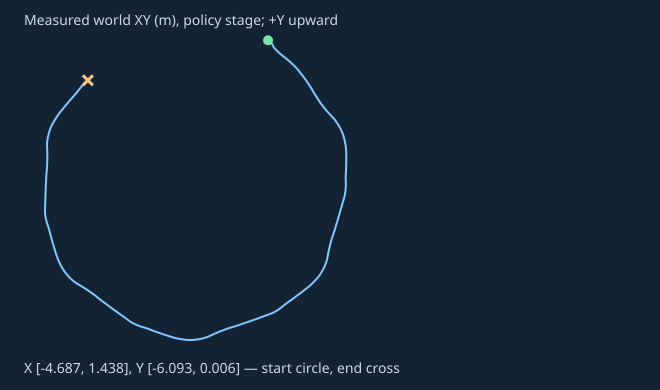
MP4 SHA256 b56db7a682582024524b38dfa70c66324c6e7a8915a28d2c3f0b6ea2349301f2
本次未触发高度／倾斜阈值；survival启发式 True；400 policy ticks
原始MP4 · 12.04秒 · 640×360
最低pelvis 0.626 m；最低up 0.867；XY路径 13.453 m
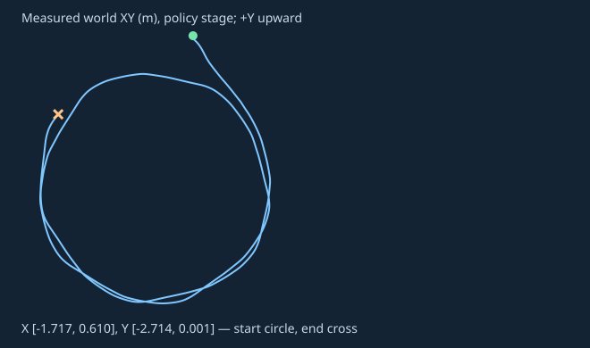
MP4 SHA256 9d3bd6cf104513cd6b66a18524c48c55b680820a9d8e4f00614b5617f0bb2274
本次未触发高度／倾斜阈值；survival启发式 True；400 policy ticks
原始MP4 · 12.06秒 · 640×360
最低pelvis 0.785 m；最低up 0.999；XY路径 0.078 m
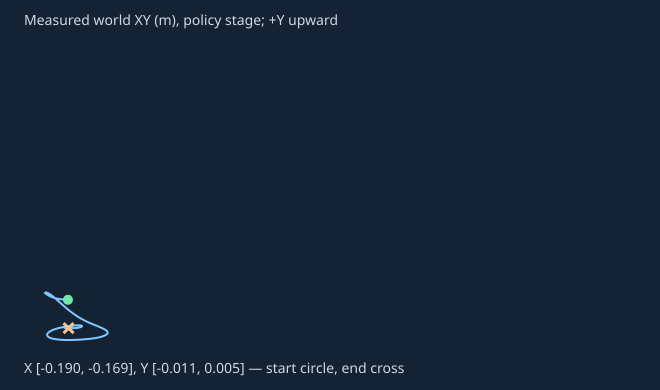
MP4 SHA256 2fdb0c4ec47399c494bfc710872f79371e5e46d6bfeb7d92d3037ae8a36aa6cd
触发高度／倾斜阈值；survival启发式 False；500 policy ticks
原始MP4 · 14.02秒 · 640×360
最低pelvis 0.062 m；最低up -0.957；XY路径 4.142 m
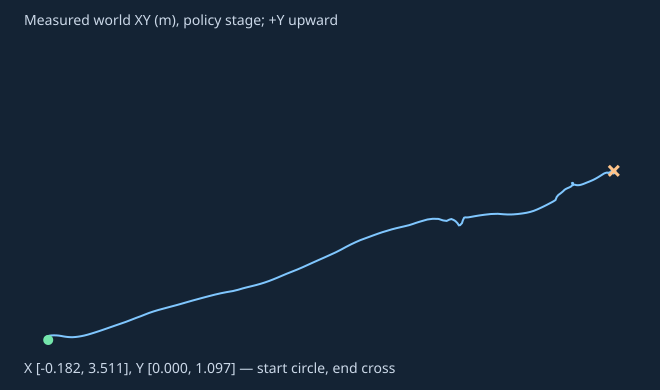
MP4 SHA256 6d332114ae66769970639d57febe9d80c6cecf64bb021f9619483548ece34b25
本次未触发高度／倾斜阈值；survival启发式 True；500 policy ticks
原始MP4 · 14.06秒 · 640×360
最低pelvis 0.656 m；最低up 0.482；XY路径 3.221 m
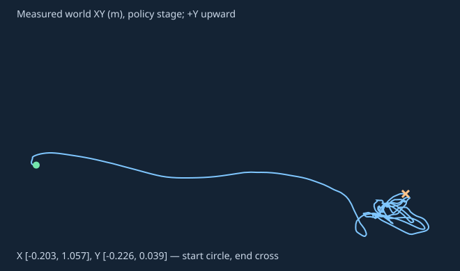
MP4 SHA256 3d9266adfc156a0f117e52b6210461b941c8b0d444301d0f1851a4e72f0c4c4b
本次未触发高度／倾斜阈值；survival启发式 True；500 policy ticks
原始MP4 · 13.96秒 · 640×360
最低pelvis 0.643 m；最低up 0.808；XY路径 19.155 m
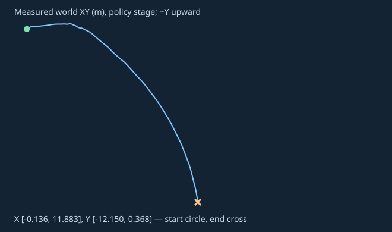
MP4 SHA256 33afaee19fab2e4514d0701925c9f4d9c2350d8030cdec57d7f18d1cbc2c58e2
本次未触发高度／倾斜阈值；survival启发式 True；500 policy ticks
原始MP4 · 14.08秒 · 640×360
最低pelvis 0.740 m；最低up 0.782；XY路径 2.363 m
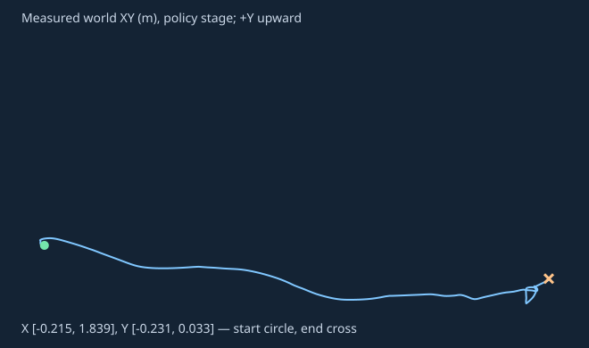
MP4 SHA256 89421e6b07e65ab8ee8b3d1af8ddfdfcb2d45084b49c03ac082aa6ccb7a8f861
触发高度／倾斜阈值；survival启发式 False；500 policy ticks
原始MP4 · 14.04秒 · 640×360
最低pelvis 0.065 m；最低up -0.557；XY路径 5.480 m
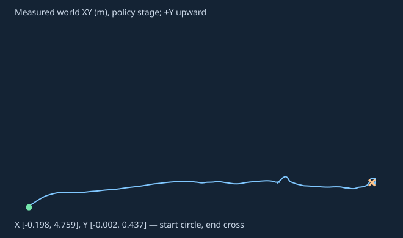
MP4 SHA256 e6cf9468fca48440980266e0e16f25f27f9760c260dd77e2188d8d0119e570bd
本次未触发高度／倾斜阈值；survival启发式 True；500 policy ticks
原始MP4 · 14.08秒 · 640×360
最低pelvis 0.741 m；最低up 0.865；XY路径 1.802 m
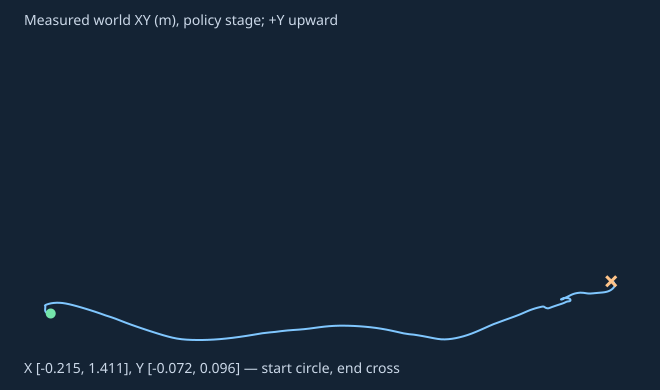
MP4 SHA256 6bcd9f1d678a03b96e4af90c7851c5674441d2f33cf01231205f7e8e1c8105a5
触发高度／倾斜阈值；survival启发式 False；500 policy ticks
原始MP4 · 14.04秒 · 640×360
最低pelvis 0.060 m；最低up -0.539；XY路径 7.312 m
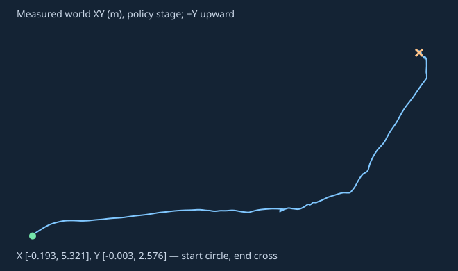
MP4 SHA256 9f4816bbe7b8566ef72fd649a99f9cdb41975084776b982fba91d7f5b603be8b
本次未触发高度／倾斜阈值；survival启发式 True；500 policy ticks
原始MP4 · 14.08秒 · 640×360
最低pelvis 0.698 m；最低up 0.814；XY路径 2.373 m
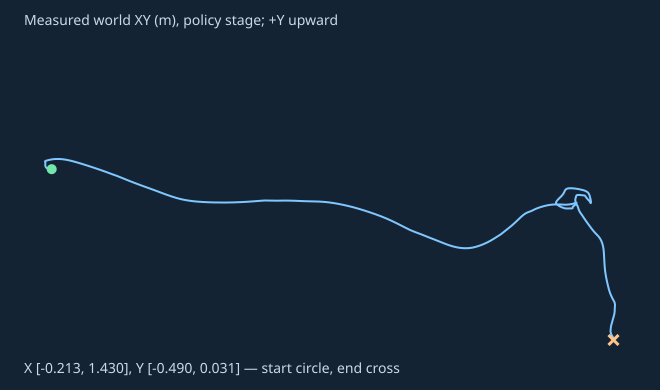
MP4 SHA256 289e00c2bc92ea0d853eb2fd278c07e2b1bc2f0b554b6d47838f89cbccf89252
触发高度／倾斜阈值；survival启发式 False；500 policy ticks
原始MP4 · 13.98秒 · 640×360
最低pelvis 0.438 m；最低up 0.107；XY路径 11.891 m
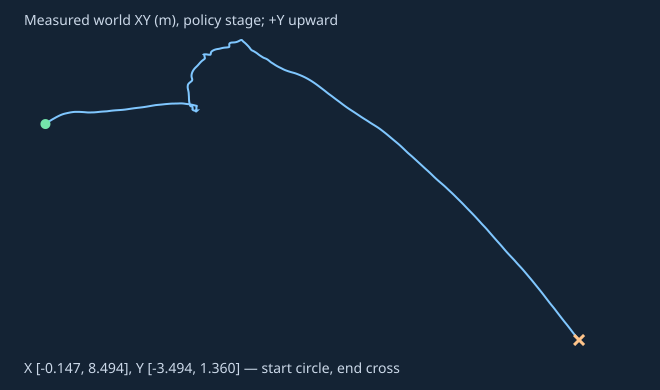
MP4 SHA256 13b55ee09f17b546513f7d5f59144a6efa3b01573c5c5bea01fc3eab48701751
本次未触发高度／倾斜阈值；survival启发式 True；500 policy ticks
原始MP4 · 14.10秒 · 640×360
最低pelvis 0.745 m；最低up 0.866；XY路径 0.853 m
MP4 SHA256 b0932a228e4ad3aad3801eedce80317c50ba7ab21f0f2134433cd4d80cb39f76
本次未触发高度／倾斜阈值；survival启发式 True；500 policy ticks
原始MP4 · 14.06秒 · 640×360
最低pelvis 0.750 m；最低up 0.986；XY路径 1.735 m
MP4 SHA256 b69717f26c071043d9c0c2c85281fb9afa75084ffb4784e7c32e1730beb3beab
触发高度／倾斜阈值；survival启发式 False；500 policy ticks
原始MP4 · 14.08秒 · 640×360
最低pelvis 0.380 m；最低up -0.358；XY路径 14.894 m
MP4 SHA256 8ac2dc015cc562f8ce1a7a88d562044992e3444e0e708bc5896bcf7ea17ea572
本次未触发高度／倾斜阈值；survival启发式 True；500 policy ticks
原始MP4 · 14.10秒 · 640×360
最低pelvis 0.637 m；最低up 0.837；XY路径 20.290 m
MP4 SHA256 08f84ca841dd2fc749afa39ae491472ef4e13361af112cbbdfe53a681338e09d
本次未触发高度／倾斜阈值；survival启发式 True；500 policy ticks
原始MP4 · 13.92秒 · 640×360
最低pelvis 0.599 m；最低up 0.802；XY路径 17.699 m
MP4 SHA256 96ae467502a960813ac2200c24eab6d3f4a64ab5e233db5214c18ccf7ec586c3
触发高度／倾斜阈值；survival启发式 False；500 policy ticks
原始MP4 · 14.12秒 · 640×360
最低pelvis 0.583 m；最低up 0.288；XY路径 10.051 m
MP4 SHA256 28a6dc8e02358e4f15b21933cbcf0d405ac44682253e514049fc5e421da1f6d3
触发高度／倾斜阈值；survival启发式 False；500 policy ticks
原始MP4 · 14.08秒 · 640×360
最低pelvis 0.196 m；最低up -0.317；XY路径 4.469 m
MP4 SHA256 c3b5c4065a09c2c0922a9492b41200db5d1307e83fac2641cd989e38d7a46f8e
本次未触发高度／倾斜阈值；survival启发式 True；500 policy ticks
原始MP4 · 14.16秒 · 640×360
最低pelvis 0.617 m；最低up 0.534；XY路径 17.793 m
MP4 SHA256 0846b77dc450ed078b67c0be7e6618696eb81f212b0f3b42de49c55a742c1a88